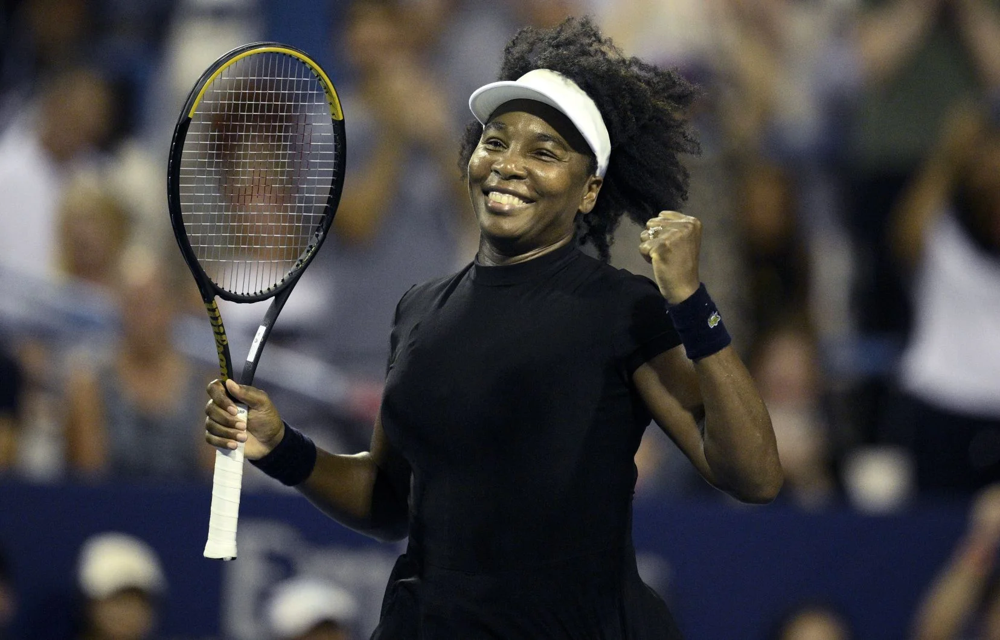

De l'Asie à l'Afrique en passant par l'Europe, l'été continue
Les performances à Monastir sont hebdomadaires.
Le Français Etienne Donnet a remporté cette semaine son troisième titre de l’année. Après avoir décroché fin mars deux tournois à Nonthaburi en Thaïlande, cette fois-ci il a changé de continent pour s’imposer au 25k de Monastir en Tunisie. Sur son parcours, Donnet aura éliminé deux compatriotes : d’abord Robin Bertrand en quart de finale, puis Cyril Vandermeersch en demi-finale. Solide du début à la fin, il n’aura perdu aucun set durant toute la semaine, confirmant son excellente dynamique du moment. Il tentera de réitérer sa victoire dès la semaine prochaine, toujours à Monastir, où le tournoi sera un 15k. Le Français y sera tête de série numéro 1, un statut qui montre sa progression mais qui implique aussi une pression supplémentaire. Alors qu’il n’avait encore jamais remporté de titre professionnel en simple jusqu’en mars, Donnet continue d’enchaîner et de construire son année avec régularité. Ces succès lui apportent des points précieux et surtout une vague de confiancequi pourrait lui permettre de se rapprocher encore un peu plus du top 300 mondial.